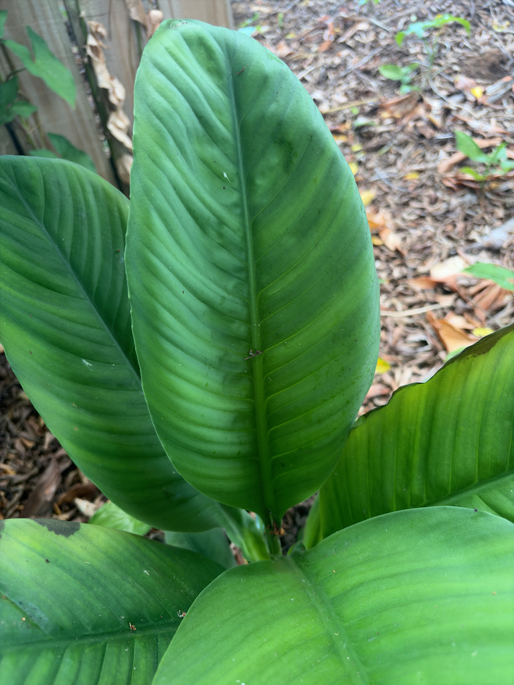

- Not a true lily — the name is a coincidence of appearance. It belongs to the aroid family, alongside philodendrons, anthuriums, and the park's own Xanadu.
- The white flag-shaped bloom is not a petal. It is a spathe — a modified leaf — wrapped around a spike of tiny true flowers called the spadix.
- In the wild, the spadix generates heat at night and releases scent to attract beetle pollinators; cultivated varieties have largely lost the scent.
- Tucked into a quiet, shady footpath by the office, these plants are easy to miss — especially under the big staghorn fern hanging in the fig tree just above them.
Non-native. Native to tropical Central and South America, primarily Colombia and Venezuela, where it grows on humid rainforest floors along streams and in low-light understory.
- Like the Snake Plant, the Peace Lily was one of the plants in NASA's 1989 Clean Air Study, which found it absorbed pollutants like benzene and formaldehyde in sealed test chambers. Later research, though, showed houseplants do little for the air in a real room — the popular 'air-purifying' claim outran the science.
- In the language of flowers white flowers generally represent peace, purity, and sympathy — which is why Peace Lilies are commonly given at funerals. The spathe is technically not a petal but a modified leaf — the actual flowers are tiny and clustered on the spadix inside it.
Limited wildlife value. Grown as a shade foliage and flowering plant; in the tropics the white spathe is pollinated by small insects, but it offers little to garden wildlife. The dense clump provides some ground-level cover in shade.
elegant white spathe surrounding a white to cream spadix — the classic peace lily flower. Blooms primarily in spring but can flower multiple times per year. The white spathe gradually turns green as it ages — a distinctive aging process that makes spent flowers easy to identify and remove. Propagation by division of clumps.
Do not eat any part of this plant. Its calcium oxalate crystals cause intense burning and irritation of the mouth, tongue, and throat if chewed or swallowed (ASPCA).
It's toxic to dogs and cats as well, causing oral burning, drooling, and vomiting. Contact your vet if you suspect a pet has chewed it.


- © Ruby Meador (CC-BY-NC), via iNaturalist
- © Randall Carter (CC-BY-NC), via iNaturalist